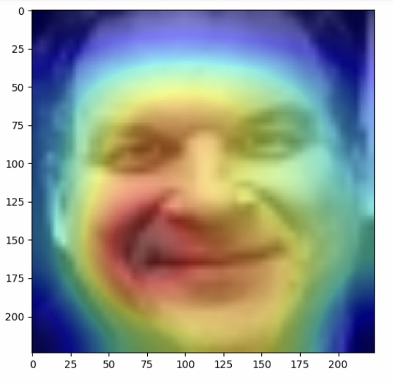

imageSentimentClassification - Kaggle Competition
Resources
Task
Image classification and explain your model.

Data augmentation
In the training data set, faces in different sizes and positions, different tilting angles, and some facing left but some others are in the right direction. These unimportant features allow us to modify them to enrich our training data set. The Keras ImageDataGenerator is a function that can transform images randomly, within the user defined restrictions. In this project, the restrictions defined as
datagen = ImageDataGenerator(rotation_range=40, zoom_range=0.4, width_shift_range = 0.2, height_shift_range=0.2,
shear_range=0.1, horizontal_flip=True,
fill_mode='nearest', dtype='uint8')
Those generated images can reduce overfitting, and this kind of data augement method can reduce memory usage.
Image Contrast Enhancement
In our training data, some images are too dark or too bright, it's hard to see faces. To avoid the effects of light, histogram equalization was used to balance pixel distribution and adjust the picture contrast.
# statistical gray scale distribution
def calcHistogram(self,image):
grayStatistic = [0] * 256 # how many pixels in each gray scale
w = image.shape[0]
h = image.shape[1]
for i in range(w):
for j in range(h):
gray = image[i, j]
grayStatistic[gray] += 1
return grayStatistic
# according to the gray scale distribution of a image, make equalization
def histEqualization(self,grayStatistic, image):
b = [0] * 256 # save gray scale ratio
c = [0] * 256 # save accumulated counts
w = image.shape[0]
h = image.shape[1]
mn = w * h * 1.0
img = np.zeros([w, h], np.uint8) # save img after equalization
for i in range(len(grayStatistic)):
b[i] = grayStatistic[i] / mn
# accumulate
for i in range(len(c)):
if i == 1:
c[i] = b[i]
else:
c[i] = c[i - 1] + b[i]
grayStatistic[i] = int(255 * c[i])
# equalization
for i in range(w):
for j in range(h):
img[i, j] = grayStatistic[image[i, j]]
return img
Model
The model is a combination of truncated Vgg16 and NiN. I take 3 blocks of Vgg16, connected with a NiN block. The NiN is Network-In-Network, it has two significant improvements in neural network, one is MLP-conv(multilayer perceptron), and the other one is GAP(global average pooling). In my project, the MLP-conv consists of a 3x3 conv layer and two 1x1 conv layers. To avoid gradient vanish and overfitting, batch normalization is added between 3x3 conv layer and “Relu” activation, and Dropout follows 1x1 conv layer. The GAP layer takes the average of each feature map, the resulting vector is fed directly into the softmax layer.
Visualize CNN filter by gradient ascent
Filter visualization displays the features extracted by a convolution kernel, it's used to explain the model.
Randomly choosing some filters in the target convolution layer, then get their gradient loss and do gradient ascent to add gradient loss on random noise, we can find what features those filters are extracting.
Adding gradient loss of each filter on the origin image, we can find out what those filters do on our images. The following image demonstrated that the last conv layer can extract eyes and facial contour features.
Saliency Map
In saliency map, we find the important areas on the face are highlighted by neural networks.

Confusion Matrix
In the training data set, the "disgust" data are rare, therefore, for other kinds of sentiment, it's not easy to be misjudged as disgust.